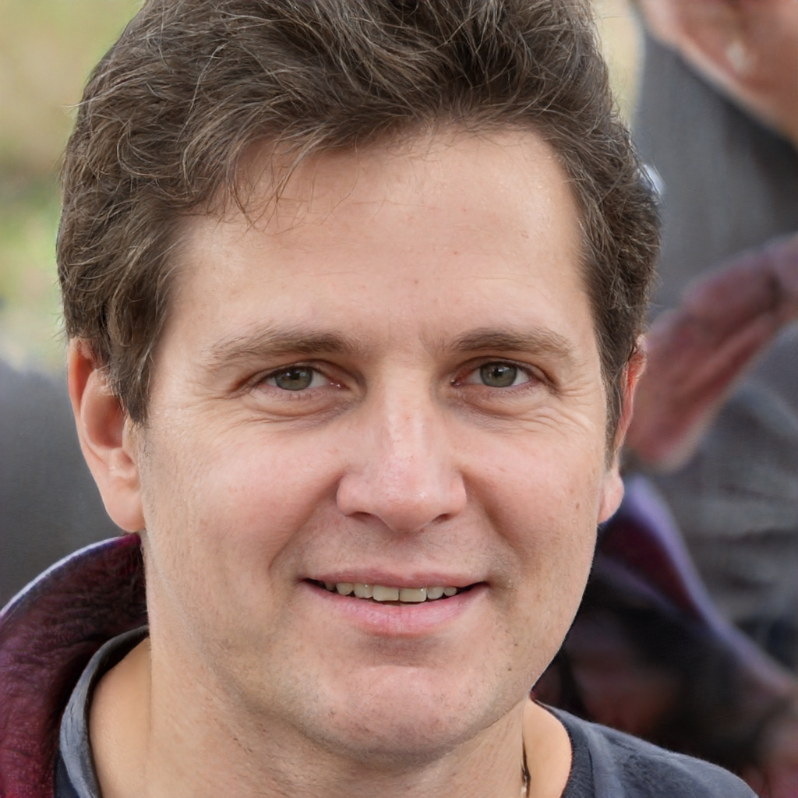
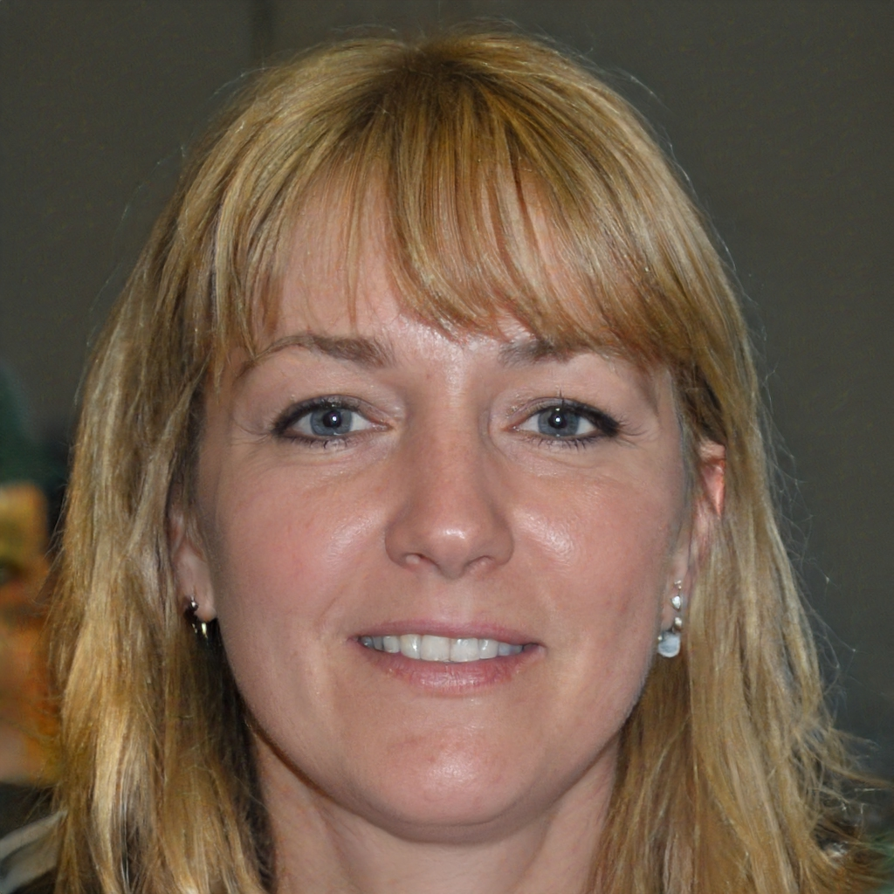
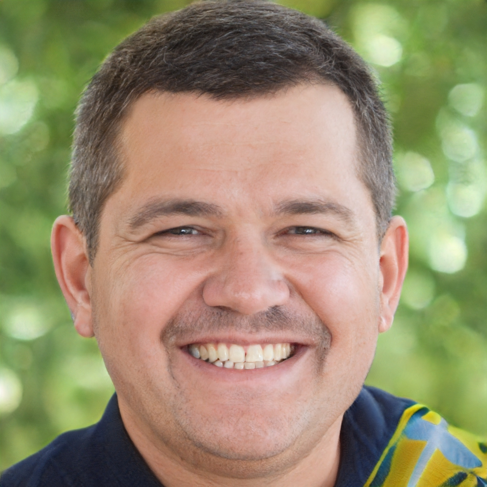

Christina Erdmann, P.A.-C
Neurosurgery
My philosophy is founded on the goal of providing compassionate, personalized, and high-quality patient care via a patient-centered approach.
Education
Bachelor's degree, Concordia University
Master's degree,University of Wisconsin
Gregory Spindler, C.R.N.A

Cardiologist
I fully embrace the Mayo philosophy of “The needs of the patient come first.”
Keeping my patients safe and comfortable while treating them like family is essential in my practice.
Education
Nursing, Normandale Community College
Bachelor's degree University of Wisconsin
Master's degree,Minneapolis School of Anesthesia
Sidni Styer, A.P.N.P.

Internal Medicine
I began my nursing career with the goal of providing safe, quality care to patients and their families.
Education
Bachelor's degree, Nursing, University of Minnesota
Doctorate,University of Minnesota
Alexander Covington, M.D.
Radiology and Imaging
I am Minnesotan born and raised, and I love this beautiful state! In my free time, I enjoy spending time with family and friends, being outdoors, and exploring new restaurants and coffee shops. I also love to water ski and I am currently working on my winter skiing skills!
Education
MD degree, University of California
Anika Kinniry, , C.N.P.
Family Medicine
My goal as a Nurse Practitioner is to see a patient as a whole, being able to treat them as the unique person they are.
I grew up in small town Waterville, Minnesota. After graduating from UW-Eau Claire, I moved to Rochester, Minnesota. I continue to live in Rochester, but I am excited to be a part of the Austin and Albert Lea communities as a provider.
Education
Bachelor's degree, Nursing, University of Wisconsin
Master's degree, Nurse Practitioner, Concordia University
Kelsey Kidd, C.N.P.
Neurology
The entirety of my healthcare-related career has been spent working in the neurological setting. I am very passionate in regard to this field of patient care and I think that shows through my comprehensive approach to caring for patients. My goal is to provide care that encompasses each patient as a whole and to help each patient be as successful as they can in their daily life. I believe in care that is centered around each individual person which is why I love getting to know my patients.
Education
Bachelor's degree, Nursing, South Dakota State University
Master's degree, Nursing, Clarkson College
Erik Wing, Ph.D.

Psychiatry & Psychology
I provide evaluation and outpatient therapy services for a range of mental health concerns, with specialized training in the areas of emotional distress, such as depression- and anxiety-related concerns, and psychosis/serious mental illness, such as bipolar disorder and schizophrenia. Patients can expect a nonjudgmental, authentic and collaborative therapeutic environment where I provide treatments that are supported by scientific research and align with their personal goals
Education
Bachelor's degree, Psychology & Marketing, University of Wisconsin–Madison
Master's degree, Clinical Psychology, The University of Kansas
Doctor of Philosophy, Clinical Psychology, The University of Kansas
Justine Abel, D.O.
Emergency Medicine
I treat my patients and families the same way that I'd like to be treated. I focus on providing a comfortable and safe experience and one in which the patient is able to voice their concerns and symptoms, be examined, with the ability to discuss potential diagnostic testing as required. We work to determine a diagnosis, but more importantly, on what can be done to improve their symptoms, function and what treatment is needed and reasonable.
Education
Midwestern University, Downers Grove, IL